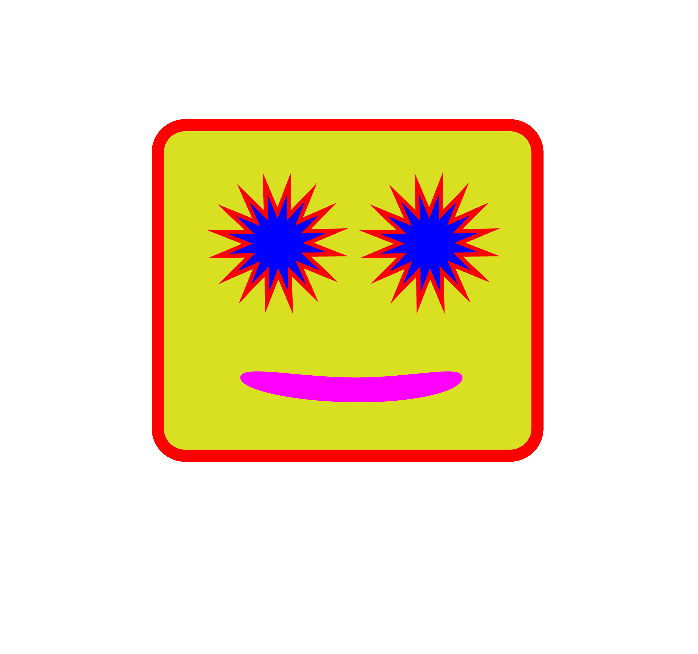

Silly Project
By Jody Culkin
My message is silliness.

Sorry, your browser doesn't support embedded videos.
Your browser does not support the audio element.
Credits: I made it all! All content by Jody Culkin.